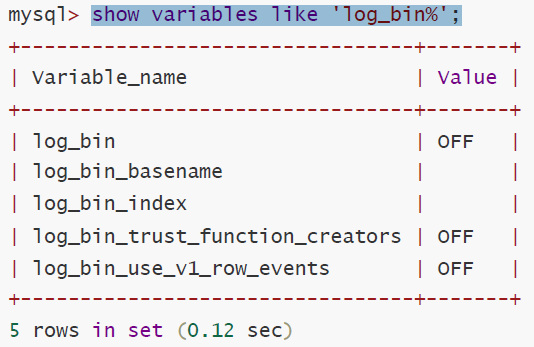

主节点配置
查看binlog是否开启可以使用命令
show variables like 'log_bin%';

log_bin为OFF代表是未开启状态
修改my.cnf文件(默认/etc/my.cnf)
在[mysqld]段下面添加
# binlog刷盘策略
sync_binlog=1
# 需要备份的数据库
binlog-do-db=hello
# 不需要备份的数据库
binlog-ignore-db=mysql
# 启动二进制文件
log-bin=mysql-bin
# 服务器ID
server-id=132
#只保留7天的二进制日志，以防磁盘被日志占满(可选)
expire-logs-days=7
重启mysql服务
查看master状态
mysql> show master status;
+------------------+----------+--------------+------------------+------------
-------+
| File | Position | Binlog_Do_DB | Binlog_Ignore_DB |
Executed_Gtid_Set |
+------------------+----------+--------------+------------------+------------
-------+
| mysql-bin.000002 | 593 | hello | mysql |
|
+------------------+----------+--------------+------------------+------------
-------+
1 row in set
主机给从机授权备份权限
GRANT REPLICATION SLAVE ON *.* TO '从机MySQL用户名'@'从机IP' identified
by '从机MySQL密码';
# 示例
GRANT REPLICATION SLAVE ON *.* TO 'root'@'%' identified by 'admin';
注意：一般不用root账号，%表示所有客户端都可以连接，一般都是由ip代替
从服务器配置
修改my.cnf文件(默认/etc/my.cnf)
[mysqld]
server-id=133
#如果salve库名称与master库名相同，使用本配置
replicate-do-db = hello
#如果master库名[hello]与salve库名[hello01]不同，使用以下配置[需要做映射]
replicate-rewrite-db = hello -> hello01
#如果不是要全部同步[默认全部同步]，则指定需要同步的表
replicate-wild-do-table=hello01.t1
replicate-wild-do-table=hello01.tab_user
重启mysqld服务
配置slave
mysql>change master to
master_host='123.57.135.5',
master_port=3306,
master_user='root',
master_password='root',
master_log_file='mysql-bin.000002',
master_log_pos=593,
MASTER_AUTO_POSITION=0;
#master_port 为MySQL服务器端口号（无引号）
#master_user 为执行同步操作的数据库账户
# 593 无单引号（此处的593 就是show master status 中看到的position 的值
# mysql-bin.000002 就是show master status的file 对应的值
启动从服务器复制功能
检查从服务器复制功能状态
mysql> show slave status \G;
……………………(省略部分)
Slave_IO_Running: Yes //此状态必须YES
Slave_SQL_Running: Yes //此状态必须YES
……………………(省略部分)
Slave_IO_Running为no时，有可能是/etc/my.cnf的server-id一样，或者有可能是/var/lib/mysql/auto.cnf的server-uuid一样的原因导致
/var/lib/mysql/auto.cnf存放是GTID的值
从MySQL 5.6.5 开始新增了一种基于 GTID 的复制方式。GTID即全局事务ID （Global Transaction
Identifier），其保证为每一个在主上提交的事务在复制集群中可以生成一个唯一的ID。
这种方式强化了数据库的主备一致性，故障恢复以及容错能力。GTID在一主一从情况下没有优势，对于
两主以上的结构优势异常明显，可以在数据不丢失的情况下切换新主。
GTID实际上是由UUID+TID (即transactionId)组成的，其中UUID(即server_uuid) 产生于auto.conf文
件，是一个MySQL实例的唯一标识。TID代表了该实例上已经提交的事务数量，并且随着事务提交单调
递增，所以GTID能够保证每个MySQL实例事务的执行。GTID在一组复制中，全局唯一。 通过GTID的
UUID可以知道这个事务在哪个实例上提交的。